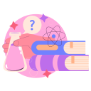

I'm Sabine
a Product Owner

I love to be responsible for prioritizing and determining the functionality and requirements of a product, and love ❤ working with a diverse, international team to ensure its success.
As a Product Owner I am responsible for prioritizing and determining the functionality and requirements of a product, working closely with the development team to ensure that the product is successfully developed and deployed. I love also to be responsible for communicating with stakeholders and managing and monitoring the product backlog.
I am teaching artificial intelligence and datascience topics at the DHBW (Duale Hochschule Baden-Württemberg).

Bike touring is the greatest for me. New cultures, nature, on the move and always expecting the unexpected ...
Let's cycle together, we can chat about IT products and how to best plan, prioritize and communicate professionally. Or are you more interested in artificial intelligence and teaching jobs? Or we just enjoy cycling.
CONTACT ME© Dr. Sabine Gillner.